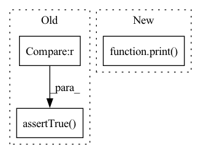

Pattern ID :31822

Before Change
predicted_output = np.sum(input_match)
generated_output = conv2d_out[0, height, width, 0]
self.assertTrue(generated_output == predicted_output)
self.assertTrue(np.prod(input_match.shape) == kernel_size[0] * kernel_size[1])
tf.compat.v1.reset_default_graph()
sess.close()
After Change
predicted_output = np.sum(input_match).astype(dtype="float32")
generated_output = conv2d_out[0, height, width, 0]
print("generated output: ", generated_output)
print("predicted output: ", predicted_output)
self.assertEqual(generated_output, predicted_output)
self.assertTrue(np.prod(input_match.shape) == kernel_size[0] * kernel_size[1])
In pattern: SUPERPATTERN
Frequency: 3
Non-data size: 3
Instances
Fragment ID: 93048811
Project Name: quic/aimet
Commit Name: 420a1e069a8effb77a99f0894c25785080258346
Time: 2021-03-17
Author: quic_hitameht@quicinc.com
File Name: TrainingExtensions/tensorflow/test/python/test_channel_pruning.py
M Class Name: TestTrainingExtensionsChannelPruning
N Class Name: TestTrainingExtensionsChannelPruning
M Method Name: test_find_input_match_for_pixel_from_output_data_baseline_channels_last(1)
N Method Name: test_find_input_match_for_pixel_from_output_data_baseline_channels_last(1)
M Parent Class: unittest.TestCase
N Parent Class: unittest.TestCase
M File Name: TrainingExtensions/tensorflow/test/python/test_channel_pruning.py
N File Name: TrainingExtensions/tensorflow/test/python/test_channel_pruning.py
M Start Line: 404
M End Line: 417
N Start Line: 210
N End Line: 264
'>
Before Change
self.assertTrue(8 == bitwidth)
o_quantizer.bitwidth = 6
bitwidth = o_quantizer.bitwidth
self.assertTrue(6 == bitwidth)
sym_encoding = bias_quantizer.use_symmetric_encoding
self.assertFalse(sym_encoding)
bias_quantizer.use_symmetric_encoding = True
After Change
bias_quantizer = sim.param_quantizer("conv2d/BiasAdd")
// check if __str__ can print the object info
print(p_quantizer)
bitwidth = p_quantizer.bitwidth
self.assertEqual(8, bitwidth)
p_quantizer.bitwidth = 6
bitwidth = p_quantizer.bitwidth
'>
Fragment ID: 93048810
Project Name: quic/aimet
Commit Name: af55d14c7d58796c13a024f57f15fcb3c1905337
Time: 2020-06-01
Author: quic_ssiddego@quicinc.com
File Name: TrainingExtensions/tensorflow/test/python/test_quantsim.py
M Class Name: TestQuantSim
N Class Name: TestQuantSim
M Method Name: test_set_get_quantizer_params_using_properties(1)
N Method Name: test_set_get_quantizer_params_using_properties(1)
M Parent Class: unittest.TestCase
N Parent Class: unittest.TestCase
M File Name: TrainingExtensions/tensorflow/test/python/test_quantsim.py
N File Name: TrainingExtensions/tensorflow/test/python/test_quantsim.py
M Start Line: 361
M End Line: 389
N Start Line: 357
N End Line: 391
'>
Before Change
predicted_output = np.sum(input_match)
generated_output = conv2d_out[0, 0, height, width]
self.assertTrue(generated_output == predicted_output)
self.assertTrue(np.prod(input_match.shape) == kernel_size[0] * kernel_size[1])
tf.compat.v1.reset_default_graph()
sess.close()
After Change
predicted_output = np.sum(input_match).astype(dtype="float32")
generated_output = conv2d_out[0, 0, height, width]
print("generated output: ", generated_output)
print("predicted output: ", predicted_output)
self.assertEqual(generated_output, predicted_output)
self.assertTrue(np.prod(input_match.shape) == kernel_size[0] * kernel_size[1])
'>
Fragment ID: 93048808
Project Name: quic/aimet
Commit Name: 420a1e069a8effb77a99f0894c25785080258346
Time: 2021-03-17
Author: quic_hitameht@quicinc.com
File Name: TrainingExtensions/tensorflow/test/python/test_channel_pruning.py
M Class Name: TestTrainingExtensionsChannelPruning
N Class Name: TestTrainingExtensionsChannelPruning
M Method Name: test_find_input_match_for_pixel_from_output_data_baseline_channels_first(1)
N Method Name: test_find_input_match_for_pixel_from_output_data_baseline_channels_first(1)
M Parent Class: unittest.TestCase
N Parent Class: unittest.TestCase
M File Name: TrainingExtensions/tensorflow/test/python/test_channel_pruning.py
N File Name: TrainingExtensions/tensorflow/test/python/test_channel_pruning.py
M Start Line: 336
M End Line: 350
N Start Line: 149
N End Line: 201